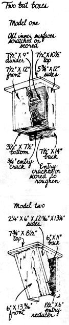
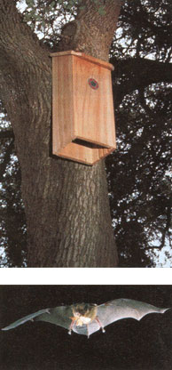

Install A Bat House For Natural Pest Control
Build or buy a bat house to control mosquitoes, moths and more.
By the Mother Earth News Editorial Staff
September/October 1990
Ordinarily, this column is devoted to what we used to call "pets," a word nudged into disrepute by animal-rights advocates who consider it patronizing and demeaning to the animals, giving them approximately the status of toys: cute, playful objects that exist solely for our amusement. But the term companion animals does more than elevate dogs, cats, hamsters and other domesticates kept around the house. It also suggests that every animal is a human companion, a fellow traveler, whether it was bred to our specifications or not, whether we feed and pet it or not, and even whether we like it or not. Which brings us to bats, those ace mammalian fliers long maligned and widely regarded with disgust, as though - creatures of twilight and night - they intend us evil.
Fortunately, the myths are starting to evaporate, thanks in great measure to scientists like Merlin Tuttle, of Bat Conservation International (BCI) in Austin, Texas. Bats do not get entangled in human hair, nor are they any more prone to rabies than most other mammals. True, there is a species in Latin America that takes a blood meal from cattle and is called the vampire bat. But, when you think of it, mosquitoes do that to us all the time. We retaliate by spraying the hell out of them, meanwhile suffering the toxic indignity of chemical residue leaching into the environment and eventually into our very own tissues.
The irony in today's lesson is that most North American bats are insectivorous, capable of polishing off hordes of mosquitoes every night. So it makes terrific sense to let them do their thing, even to encourage it, not only by supporting efforts to preserve existing bat roosting sites in your community but by creating new ones - in your own backyard.
You can do this in a couple of ways. You can order a ready-made bat house from BCI and mount it on the side of a house, barn or tree, in which case a portion of the money you spend will go into BCI's conservation work, which is money well-spent. Or you can build a bat box yourself in an afternoon by referring to the illustrations that accompany the bat questions and answers provided by BCI. Either way, if the boxes you mount end up being occupied, the local mosquito population will find itself nicely dented next spring. And you will find yourself feeling a little more hospitable and companionable!
Where should I locate my bat house?
Bat houses located near a permanent source of water, especially a marsh, lake or river, are by far the most likely to attract bats. They should be hung roughly 12-15 feet above the ground, where the approach is unobstructed by vegetation or utility wires and they are sheltered as much as possible from the wind. A bat house can be placed on a tree or pole, although those attached to the side of a building have had the most success because they provide temperature stability.
What temperatures do bats tolerate?
Since appropriate temperature may determine how (or even it) your bat house is used, you may wish to consider several factors before mounting it. Lower temperatures, due to higher altitude or latitude, require that bat houses intended for use by nursery colonies be oriented to receive maximum sun, especially in the morning (southeast exposure. Another way to gain heat absorption is to add tar paper or dark-colored shingles to the bat house roof. Even in hot climates, bat houses should be positioned to receive morning sun.
Nursery colonies of females and young normally prefer stable temperatures from 80-100° Fahrenheit, though some species tolerate temperatures higher than 120. Bachelor colonies frequently select cooler roosts, so even if your bat house is too cool for a nursery colony, you may still attract bachelors.
When can I expect bat arrivals?
Although there has been one report of bats moving into a house within hours, a year to a year and a half is a more common waiting period. Some highly successful bat houses were not occupied until the third year. Hanging houses in the fall or winter might increase the probability of occupancy in the first active season. If a house is not occupied by the end of the second year, you might change its location.
What types of bats are most likely to use a bat house?
Throughout the northern two-thirds of the United States and into Canada, the little brown bat (Myotis lucifugus) and the big brown bat (Eptesicus fuscus) are the most prevalent. These species also occur in the southeastern United States, but in the Gulf states the southeastern bat (Myotis austroriparius) and the Mexican freetailed bat (Tadarida brasiliensis) are the most common. In the southwest and western United States, the Mexican freetailed bat and a variety of small bat species (often loosely referred to as mouseeared bats may occupy bat houses. Pallid bats (Antrozous pallidus) may also roost in bat houses, especially in arid areas. In general, any species that naturally roosts in crevices or is known to roost under bridges or in buildings is a likely candidate for a bat house.
How can I attract bats to my bat house?
Bats find bat houses just as birds find birdhouses. If roosts are needed in your area, and your bat house is appropriately located and meets bat requirements, bats eventually will find it and move in on their own. Some people have painted the inside of bat houses with moistened bat droppings to establish a bat odor, but no one is certain that this makes houses any more attractive to bats.
Most North American bats apparently prefer to live within a few hundred yards of water, especially streams, marshes or lakes, although colonies are sometimes found up to a mile or more from such places. In some western areas, they may travel several miles, utilizing only a cattle trough or some other small water source. Wherever bats live, they must find enough insects to eat, which largely explains their preference for aquatic habitats. In urban areas, the oldest neighborhoods, with their larger trees and more-established yards, are the most apt to meet bat needs.
Where are bat houses most likely to be needed?
Bats are most likely to look for alternative roosts such as bat houses in areas where roosting places are insufficient to house as many bats as the local insect population can support. Examples of such places include areas where forestry practices have largely eliminated old hollow trees, or neighborhoods where bats have been excluded from attics or wall spaces. Conditions for your bat house don't have to be perfect for it to be occupied. Even natural roosts are seldom ideal.
Do bats migrate south for the winter, or will my bat house be used year round?
In Canada and the northern two-thirds of the U.S., all bats migrate south or find safe hibernating sites for winter. Very few species can long survive subfreezing temperatures. Tree-roosting species travel south, while those that would occupy bat houses generally move to an undisturbed cave or abandoned mine. The big brown bat is so exceptionally hardy that it sometimes overwinters in the outer walls of buildings. Bats might overwinter in bat houses only in southern or coastal areas where winters are mild.
If I put up several bat houses, will I attract more bats?
Europeans often put up four at a time around a tree trunk. They arrange them to face each direction, providing a variety of temperatures so as to better meet the bats' seasonal needs. In some cases, people who put up two or more houses at once report that all are occupied. In one case, however, one of two houses mounted side by side was used by 30 bats, while the other was ignored over a period of two years. Although it is difficult to anticipate how many bat houses might be needed in a given area, one might reasonably assume that more of them would attract snore bats. However, use of more than four is not recommended until at least one has been occupied, thereby confirming a local need.
How effective are bats at pest control? Do they really curb the mosquito population?
While birds, such as purple martins, play a major role in controlling day-flying insects, bats are by far the most effective checks against nightflying species, including such pests as mosquitoes, corn borers and cutworm moths. The amount a bat eats varies with season and stage of reproductive cycle, sometimes as much as tripling for nursing mothers. The actual number of insects caught varies, ranging from less than a hundred moths or beetles to thousands of smaller insects, such as mosquitoes, per night. In fact, bats probably require a mix of several kinds of insects, as the abundance of nightly and seasonal hatches varies.
Laboratory studies have demonstrated that a single little brown bat can catch up to 600 or more mosquitoes in an hour. This and other species have been documented in the wild as feeding heavily on several species of mosquitoes when they are available. A single endangered gray bat may catch 3,000 insects in a night, and large colonies can consume countless billions. The Mexican free-tailed bat colony in Texas's Bracken Cave, for example, catches nearly half a million pounds of insects nightly! It takes 20 million bats to do that, but even 30 little brown bats from one bat house easily could catch more than 30,000 insects in an evening's feeding. No control is perfect, but when it comes to reducing mosquitoes, no bug zapper is a match for bats.
Can a bat get rabies? Will my family be in danger?
Like all mammals, bats can contract rabies, though very few (less than one half of one percent do, and even when rabid, bats rarely become aggressive. Like other animals, they quickly die, and outbreaks in their colonies are extremely rare. The odds of being harmed, even by a rabid individual, are remote if you simply do not attempt to handle bats. Any bat that is easily caught should be assumed to be sick and left alone.
It is helpful to put the danger in perspective. In more than four decades of record keeping in the United States, only 15 people are believed to have died of bat-borne rabies. More people die annually from contact with household animals. With or without bats in your yard, the most important action you can take to protect your family from rabies is to vaccinate your dogs and cats.
BCl, a nonprofit group, sells finished cypress houses with a booklet on bat basics for $31.95, plus $5 for shipping. You can join BCI for $25 or send a contribution of any amount and receive the booklet and a set of house-building plans. The address is Bat Conservation Interna tional, P.O. Box 162603, Austin, TX 78716.- Mother
 Merlin D. Tuttle Mammalogist and head of Bat Conservation International Merlin Tuttle advocates providing one or more bat houses to attract the pest-eating mammals. |
 Kay Holmes Stafford Build a bat house using these instructions. |
 Merlin D. Tuttle This bat house purchased from BCI attracts the common big brown bat. This one has found a moth. |